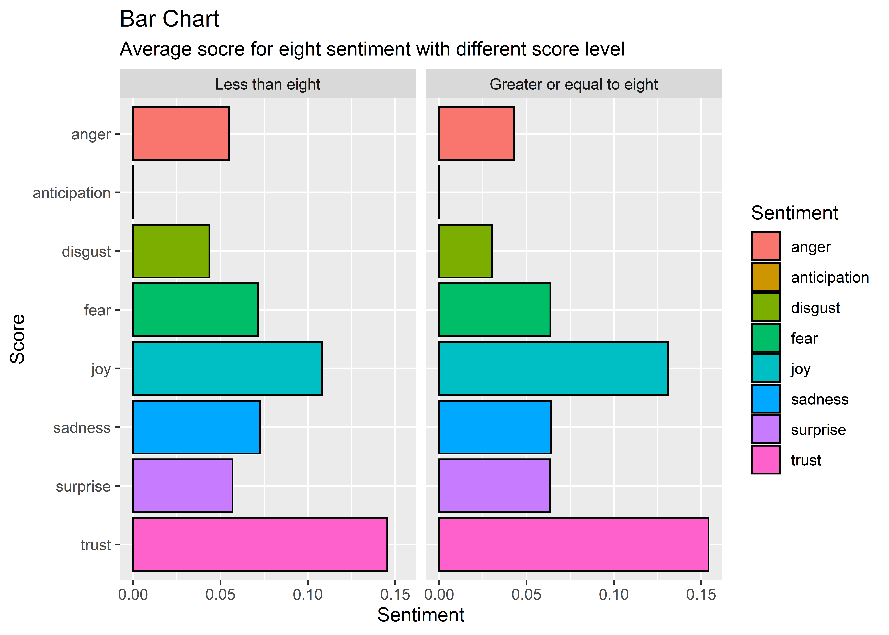

Chapter 5 Results
5.1 Sentiment Analysis
5.1.1 Heatmap
During the data processing part, we apply sentiment analysis using NRC Sentiment lexion. “The NRC Emotion Lexicon is a list of English words and their associations with eight basic emotions (anger, fear, anticipation, trust, surprise, sadness, joy, and disgust) and two sentiments (negative and positive). The annotations were manually done by crowdsourcing.”
We encoded the review texts by assigning each word a sentiment vector, and the overall sentiment of a paragraph is the sum of all forming words. We then plot the average sentiment values with respect to reviews for different genres of anime to see any patterns of reviews, with the heatmap, we could see the emotion distribution of users towards each genre of anime.

We can find some of the interesting patterns from the heatmap above:
- From the Sentiment heatmap of animes by genres, we found that most of the animes have the sentiment with trust and joy. Which, are two of the most positive emotions.
- For anime in Advantures, there are more
joyandtrustthan other genres’, and lessanger,disgustandsadness. These make sense since most of the animes belong to this genre tend to give audiences a feeling of excitement and happiness. - For anime in Yaoi, there are more
surprisethan other genres. This also makes sense since many of these animes are made by anime lovers instead of original authors. Audience may feel surprised seeing different stories compared to the original ones. - For anime in Shoujo Ai, there are less
trustand morefearthan other genres. The reason might be that many of the audiences are children or adolescents. This type of genre, however, may not be appropriate for those audience. Reviewers may express their concerns towards these genres.
5.1.2 Cluster Plot
With the emotion and sentiment matrix we obtained before, we then cluster the animes according to the sentiments and did a sentiment cluster plot to see any patterns or clusters among these anime genres.

- The cluster plot gives us the cluster of genres with respect to the emotions of reviewers. As we can see from the heatmap, Yaoi and Yuri has the most change in
surpriseandtrust. Therefore they are in the same cluster. - For some genres like Vampire, Demons, Super Power, Magic and Psychological, they are in the same cluster. Which make sense.
- Cars and Thriller change mostly in some sentiment from the heatmap, so they are in the same cluster.
- For some genres like Shoujo, Shounen Ai, Harem and Hentai, they are in the same cluster. These are all some types of animes with small group of audiences.
5.1.3 PCA
We also conducted PCA analysis to the dataset, and we could see some interesting findings in the plot below.

- From the plot, Yuri, Yaoi, Shounen Ai and Cars are most likely outliers in our dataset.
- The
surpriseindicator is most positively correlated withtrust - The
angerindicator is most uncorrelated withtrust - The
fearindicator is most negatively correlated withtrust
5.1.4 Bar Chart
We draw the bar plot with facet to user score with the overall eight sentiment score to see if there are any patterns. The median score of our dataset is about 8, therefore we facet the plot with socre greater or equal to 8 and less than 8.

We found that:
- For review score Less than eight, there are more negative sentiment average score, eg.
anger,disgust,fearandsadnessthan that of Greater or equal to eight. - For review score Greater or equal to eight, there are more positive sentiment average score, eg.
joy,supriseandtrust.
5.2 Score Distribution Analysis
5.2.1 Overall Score by Genres
Firstly we plot the overall socre density plot to see if there are any patterns between scores and anime genres:
 From the plot we can see that:
From the plot we can see that:
- Most of Genres socre density are left-skewed.
- Some potential outliers may be Josei, Yaoi, Yuri, Shoujo Ai, Shounen Ai and Thriller. These types of genres usually only have some groups of audiences.
- Most of the animes have relatively higher scores (eg. greater than 7) distribution than scores lower than 7.
5.2.2 Overall Score by Types
Secondly we plot the overall score with violin plot to see if there are any patterns between scores and anime types:
 From the plot we can see that:
From the plot we can see that:
- TV and OVA have more higher scores (e.g. greater than 7) and fewer lower scores distribution than other types. Besides, the distribution between TV and OVA is similar. This may be because OVA is a type of anime that usually works as additional episodes for TV anime.
- ONA have the least anime scores since these types of anime are relatively uncommon, usually sponsored by private customers instead of anime company.
5.2.3 Overall Average Score by Genres/Types
Finally in this section we plot the Cleveland dot plot to see the average overall score among different genres and types:

We found that:
- ONA and Special tend to have a relatively large span of anime overall score. The shape of these types is “S” shape.
- For some of the genres in Music, such as Samurai and Parody, their overall average is almost the same. This is because they are to some extent similar genres. The same pattern we can see from Magic, Horror and Demons, which are also very similar. Therefore a problem with this is that once we may have repeated anime genres, some other types of genres may be ignored.
- Samurai anime tends to have a relatively high average overall score.
- Dementia anime tends to have a relatively low average overall score.
5.3 Score Indicator Analysis
From our dataset, each review not only has an anime overall score, but also has different indicators scores: story, animation, sound, character, enjoyment. In this part of analysis, we tend to focus on the relationship between these indicators and anime genres/types.
5.3.1 Score Indicator by Genres
We firstly focus on the relationship between anime genres and these indicators:

## Outlier1 Outlier2 Outlier3
## Potential Outliers Shoujo Ai Josei Vampire- We observe that Shoujo Ai, Josei and Vampire anime are potential outliers.
- There is one main cluster.
- All of these indicators seems to be uncorrelated with each other in terms of genres.
5.4 Anime Episodes Overtime
The final section we want to focus on the change of animation overtime. We calculate the average episodes for each type of anime. We drop anime whose types are Movie and Music since these types of animation usually have only one episode. We plot the multiple line chart of average episodes of anime by time:

We found that:
- The episodes of TV and OVA are decreasing. As a anime fan, I can feel the trend by myself. For example, when I was a child, some of the famous anime I watched have hundreds of episodes. For example, “Dragon Ball” and “Naruto”. When I went to high school, some of the animation I watched have fewer episodes, or in other words, 25 episodes a season. “Attack on titan” and “Steins Gate” may be the famous example. When I graduate from college, the episodes of anime, however, have decreased again. Many anime nowadays only have 12 or 13 episodes a season.
- There is another trending that the episodes of ONA, Original Net Animation, or in other words, web animation, have increased sharply. The development of internet and mobile devices accounts for this type of trending. It becomes more and more easier watching anime online than before. More people choose to watch anime on mobile devices instead of watching on TV.